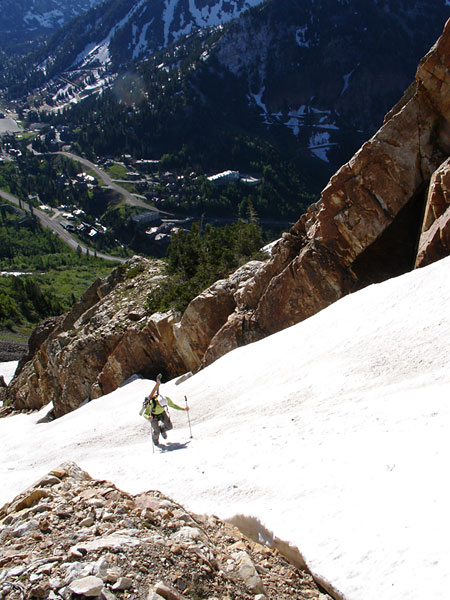
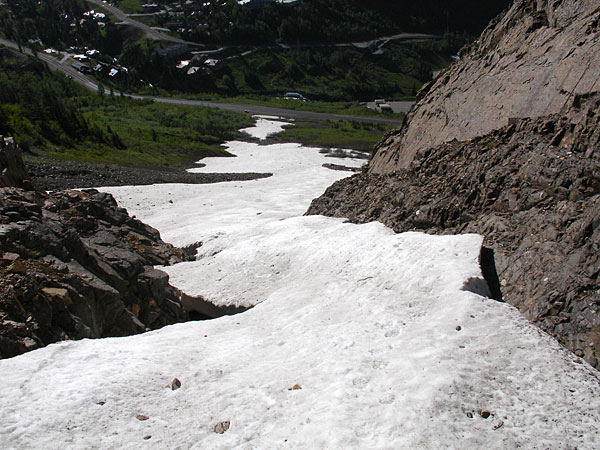

|
Mount Superior Apron
We weren't planning on Superior, but since the snow came all the way down
to the road, we couldn't resist!
StairMaster Unplugged.
Follow the yellow brick road, or the icey white one. You Choose.

Chamonix or Alta?

Fu never makes a boring turn.
So maybe you couln't ski ALL the way to the car....

The good news about the end of avalanche season is that you get to park
right in the center of the Mt. Superior slide path.
|